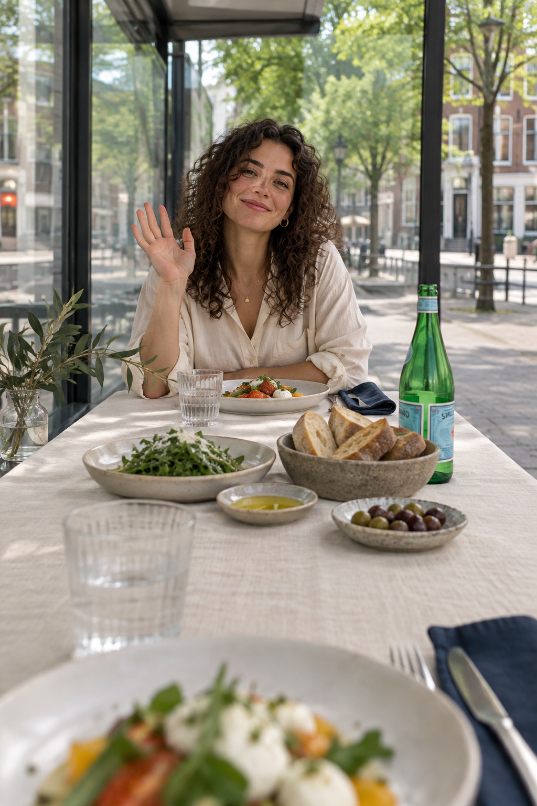

★S.PELLEGRINO
The Bubble Stop · versie 3
Same city. Different worlds.

ANDERE DEELNEMER · DEMOBEELDJouw beeld
Camera staat uitJIJ · TILBURG STATION
Camera staat uitJIJ · TILBURG STATION
Different worlds. One moment.
Een kleine ontmoeting.
Een plek aan tafel.
Meer mensen ontmoeten?
Schuif aan bij The World’s Longest Italian Table.
CLAIM YOUR SEAT
QR-uitnodiging
Inschrijflink nog niet gekoppeld
QR-uitnodiging
Inschrijflink nog niet gekoppeld
ZWAAI · KIES EEN VRAAG · ONTDEK WAT JULLIE VERBINDT
Different worlds. One moment.